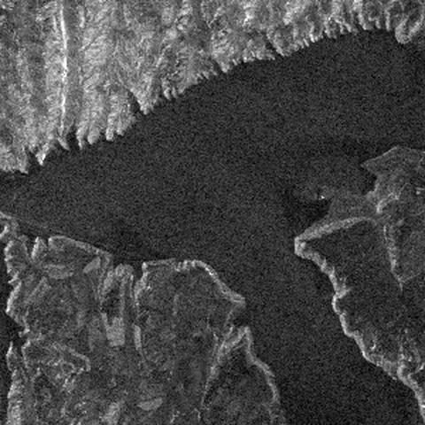
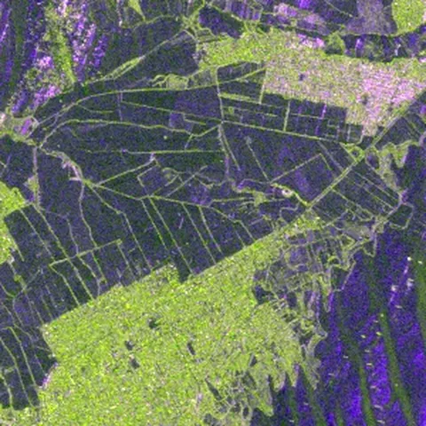
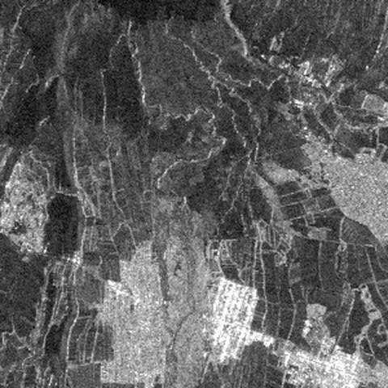
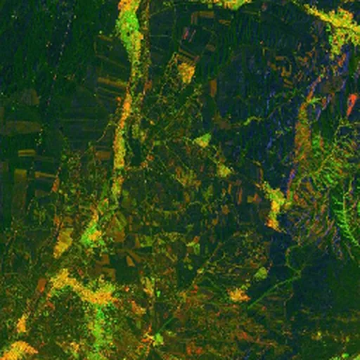
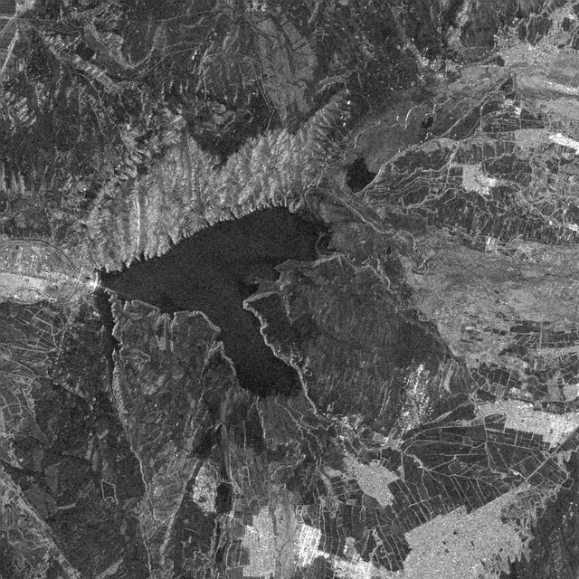
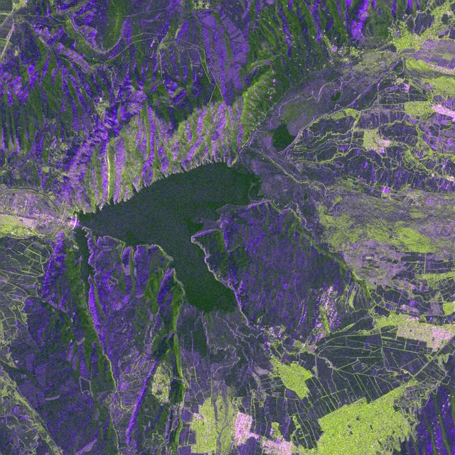
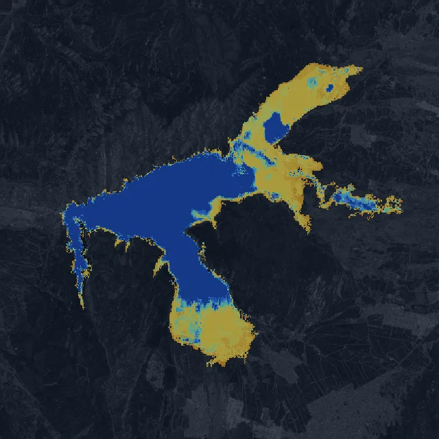
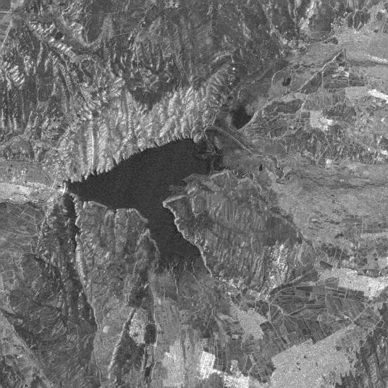
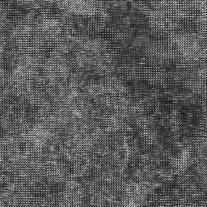

Calm water: black
Water acts as a mirror. The pulse glances off and away (specular reflection), so almost nothing returns.
Andijan reservoir, NISAR L2 GCOV HH, 30 Oct 2026Learn · 5 minutes
NISAR does not take photos. It sends a microwave pulse and listens to the echo. Here is how to read what comes back, in plain words first and the radar term second.
NISAR's radar sends its own 24 cm microwave pulse and records how much bounces back (backscatter). The echo depends on a surface's shape and wetness, not its colour. Three rules explain most of every picture.

Water acts as a mirror. The pulse glances off and away (specular reflection), so almost nothing returns.
Andijan reservoir, NISAR L2 GCOV HH, 30 Oct 2026
Leaves and stems scatter the pulse in every direction and twist it (volume scattering). The twisted HV echo shows as green.
Fields east of Andijan, false colour R = HH, G = HV, B = HH/HV, 30 Oct 2026
A wall and the street form a corner that throws the pulse straight back (double bounce), so towns glow white.
Towns south of the reservoir, NISAR L2 GCOV HH, 30 Oct 2026
Same physics, anywhere NISAR flies. This is NASA's own NISAR map tile, the same feed Falakus uses for any place on Earth. Vegetated valleys show green, bare and built ground warm, smooth surfaces dark.
Chirchiq valley, north-east of Tashkent (41.5–41.8°N, 69.3–69.6°E), 1 Nov 2026. NASA GIBS layer NISAR_L2_Geocoded_Polarimetric_Covariance, zoom 10 (about 115 m pixels), GIBS colour composite.The same 18 km square around the Andijan reservoir, three ways. This is the path from what the satellite gives us to a number someone can act on.

1 · Raw

2 · Physics

3 · Product
Radar: NASA-ISRO NISAR L2 GCOV, NASA/JPL-Caltech, distributed by ASF DAAC; 30 Oct 2026; processed by Falakus. Product: Falakus learned water map (tools/ml_water.py, tools/water_frequency.py).
Cloud droplets are about 10 µm across. NISAR's wave is 24 cm, about 24,000 times longer, so it passes straight through them. And because the radar brings its own pulse (active sensing), night makes no difference. Radar does not detect clouds. It ignores them.

NISAR RADAR · SAME DAYEurope's Sentinel-1 uses 5.6 cm C-band. NISAR uses 24 cm L-band. The longer wave slips past leaves to stems and soil, sees floods under forest, and keeps its signal steady between passes over plants (coherence), which ground-motion maps need.
Top row: how any place on Earth reaches your screen, with no server of ours in the way. Bottom row: our own science path, where we open the full calibrated files to measure, not just look.
Swipe sideways to see the whole diagram.
A model that only looks right is not enough. We score our water map three ways, and each test is built so that cheating cannot pass it.
We hide one photo day, train on the rest, then score only the hidden day (leave-one-date-out). The score is overlap with the Sentinel-2 photo (IoU).
We train the same model on scrambled answers. If it still scored well, it would be memorising, not learning physics. It collapses, as it should.
ICESat-2 measures the lake's water level with a laser. When the level drops, our radar area should drop too. We check the rank agreement (Spearman).
Numbers load from the project's single source of truth, data/headline_numbers.json.
Knowing where a measurement breaks is part of the measurement. These are the ones we know.

Say the plain words first, then the term. Judges trust a team that can do both.
All free and open. Each link opens the official source, so anyone can check our work.